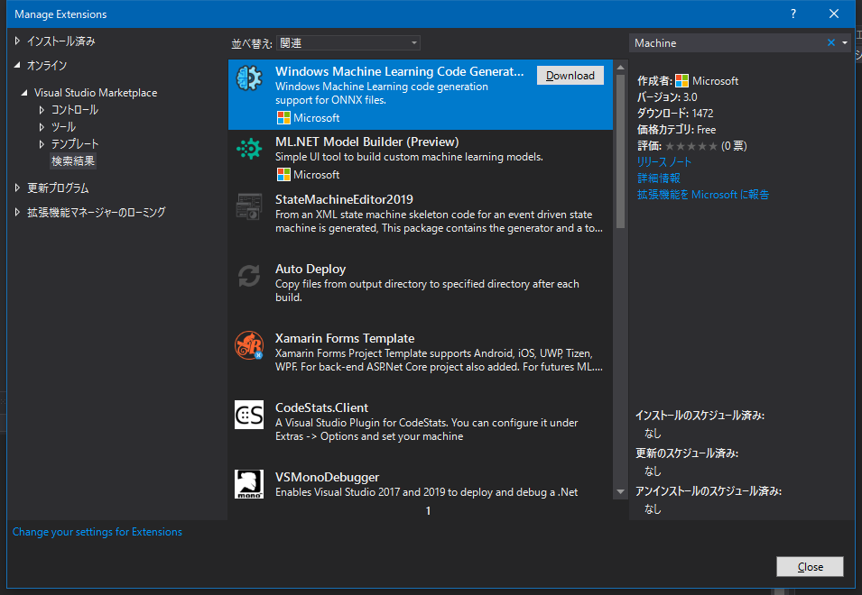
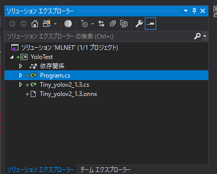

もう旬なネタでも無いですが。
What’s is ML.NET?
要するに
- .NETアプリケーションに機械学習の機能を追加
- オンライン、オフラインどっちも大丈夫だけどオフライン対応すればネットワークは気にしなくてもいい
- 32bitアプリも大丈夫
- ただし、Tensorflow、LightGBM、ONNXに関連する機能は使えない
って感じ。 現状、ディープラーニングの機能をエコシステム、特にデスクトップアプリに組み込むには、
- モデルファイルの読み込み、推論のI/F
- GPUのサポート
- 無くても良いが性能がボトルネックになる
が必須。 ディープラーニングの学習はPython一強で、ビジネスにデプロイしようとするとこれが足を引っ張る。 無論、Pythonで推論を提供するサーバーライクなアプリを書けば良いが、ネットワーク越しにすると、通信速度が足を引っ張る。システムにインストールするとPythonが必要になり、客先のシステムの制限に引っかかる可能性がある。 これらを打開するためにも、現在、AIを実世界にデプロイする方法がいろいろ模索されており、ML.NETもその一つ。
デモ (の準備)
今回は、YOLO (You Only Look Once) v2のTinyモデルで物体認識のタスクをためす。 デモの開発・実行環境
- Windows 10 1809以降
- Windows ML APIの正式版のため
- 開発自体は1809以前でも良い (Windows SDKがあれば)
- Visual Studio 2017以降
- 2019のが良い
- C#の.NET Coreコンソール
モデルファイル
モデルファイルはネットに転がっているのですが…
のは 使えません。 古いのか、後述のツールでコードの自動生成が効きません。 なので、githubから入手します。
{kind=link}
tiny_yolov2.tar.gz というファイルがダウンロードできます。 1.0 は使えない のでそれ以外を。 ダウンロード後、展開して model.onnx だけ取り出して名前を変更しておきます。 ここでは Tiny_yolov2_1.3.onnx に変更しています。
コード生成
入手したモデルファイルからコードを生成します。 機械学習の面倒なところの一つに入出力データのI/Fを合わせる、というところがあります。 どんなアプリもそうなのですが、機械学習はこのあたりが厳密。 エラー無く動いても結果がおかしい、ということは多々あります (例えば、RGBチャネルの順番が違うとか) このあたりの手間をなくすために下記の方法が用意されています。
- Windows Machine Learning Code Generator
- Visual Studioの拡張機能
- mlgen
- Windows SDK付属のCLI
Windows Machine Learning Code Generator
インストールは簡単。

{kind=link}
インストール後、全てのVisual Studioを終了。再起動ではなく、終了。でないとインストーラが起動しないので。 プロジェクトに先のONNXファイルをプロジェクトに読み込ませます。 そしてプロジェクトに先のONNXファイルを追加します。 すると、ONNXファイルに対応するコードが自動生成されます。

{kind=link}
注意するのは、フォルダの中に追加すると、プロジェクトのルートにも同じファイルが重複して生成されてしまいます。 削除すれば問題ないですが。
mlgen
mlgen.exe は C:\Program Files (x86)\Windows Kits\10\bin\10.0.17763.0\x64\mlgen.exe とかのSDK配下に存在します。 ヘルプを見てみます。 指定するのは、
- 入力元のONNXファイルのパス
- 出力するコードの言語
- 出力するコードの名前空間
- オプション。
- 出力するコードのクラス名に付与する接頭辞
- オプション。
- 出力先ディレクトリ
- オプション。なければ標準出力に出力。
です。 試しに、名前空間、接頭辞、出力先を指定せずに実行してみました。
みたいにしてみます。 先に拡張機能で生成したものと同じものができます。 (名前空間は除く)
注意
Windows 10 SDK バージョン 1903 (10.0.18362.1) からは mlgen は同梱されませんので、拡張機能を使いましょう。 古いmlgenでも良いですが、最新のONNXファイルに対応されない可能性が高いのでやめましょう。 拡張機能のディレクトリ配下にmlgen.exeがあるのでそれを使うのもありかも (C:\Program Files (x86)\Microsoft Visual Studio\2019\Community\Common7\IDE\Extensions\brkn2ieg.yfd\mlgen.exe とか。非公式でしょうが) また、実行時、Required attribute ‘consumed_inputs’ is missing というエラーが出たりしたら、古い (例えば、10.0.17763.0より古い) mlgen で変換できたりする可能性がありますが、使わない方が無難です。古いAPIを想定しているので。 例えば、最初に使えないと話した1.0のONNXファイル。 こんな感じで全然違うコードができます。
まとめ
今回はここまで。